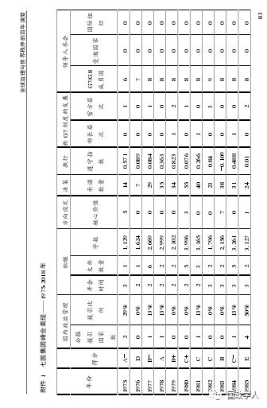
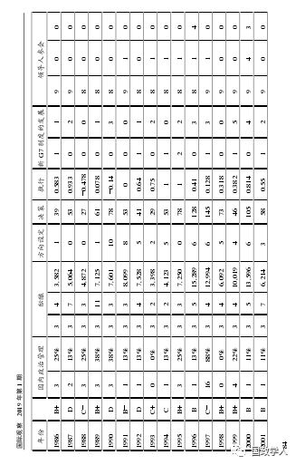
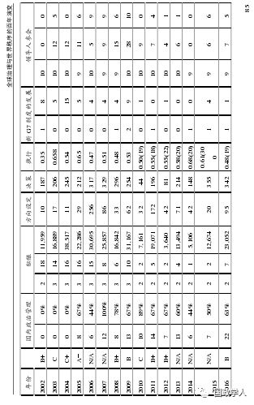
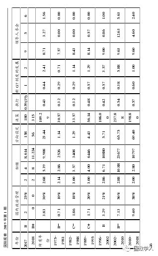
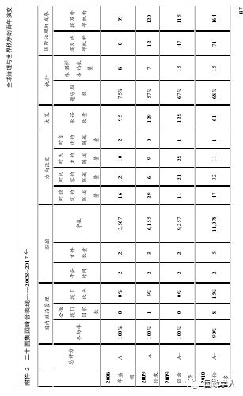
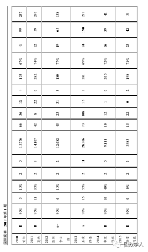
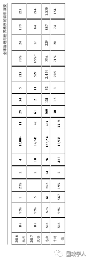

收录于合集
简 介
【作者】 约翰·柯顿：多伦多大学G20研究中心教授
**【 编辑】**金琳
【来源】 《国际观察》2019年第1期
G20研究中心联合负责人约翰·柯顿教授
内容提要
当今全球治理机制及其多边组织和世界秩序建立在对上个世纪的毁灭性战争的反思之上，但是全球化带来的新变化和新问题使得这些治理模式备受质疑。对于处于争议中心的全球治理机构，很少有系统性和对比性分析，同时也缺乏对它们在面临需求的独特使命、体制特征和业绩上的专业研究。 自 1919年以来，全球治理经历了4个主要阶段：国际联盟阶段、联合国- 布雷顿森林体系阶段、七国集团阶段和二十国集团阶段，这4个阶段的全球治理机制各有其制度方案、表现、缺陷和增补，当今全球治理体系有新的时代特点，需要新的改革方案。
关键词： 全球治理机制 全球化改革 可持续 世界秩序
正文
**1
**
引言
当今全球治理及其多边组织和世界秩序的命运备受质疑。这个体系建立在对上个世纪的毁灭性战争的反思之上，美国与英国在第一次世界大战胜利后开创了这个世界秩序，并在1919年巴黎和平会议上建立了国际联盟。目前对未来全球治理的焦虑集中于曾经是自由资本主义霸权的英美两国如今却爆发了贸易保护主义、民粹主义、民族主义和本土主义。可是，驱使当今西方大国焦虑的因素相比以往更广泛，更深刻，它们源于不断增长的不平等，不断升级的技术变革和具有破坏性的全球化。1944-1945年诞生的布雷顿森林- 联合国体系和它所包含的嵌入性自由主义原则稳固了长期以来自立与安全的民族国家，但上述因素正在攻击这些民族国家。为了塑造和加强这个在1975年和1999年两度面临新威胁的自由主义秩序，七国集团（G7）和之后的二十国集团（G20）多边首脑峰会制度应运而生。与此同时，这些机构的核心价值观“开放式民主”“人权”和“可持续的全球化”也备受质疑。
（一） 争议
这些疑虑引发了一场 关于自由秩序的争论 。 争论的核心在于这个秩序被削弱的深度，方向和原因分别是什么？它将被什么取代？
学派一看到了 引发战争的 “修昔底德陷阱”。在这种情况下，衰退的美国对中国崛起的恐慌情绪导致了国际机制最终无法管控竞争和冲突。
学派二看到了不可预测的 单边主义 。美国曾长期培育各类基于联合国的机构，并通过这些机构促进和实施了诸多多边规则，然而如今的美国却因为感到“受屈”而选择退出这些多边机制。一部分人认为单边退出的原因源于现任美国总统的偏好和个性，而另一些人则指出那些更广泛、更深刻、更持久的势力才是真正的原因，这些势力使特朗普和共和党掌权，并允许特朗普的政治方式传播到世界各地的其他国家。
学派三看到了一个 无序的无极（ “G0”）世界。自1975年以来，多边首脑峰会制度为替代失败的多边组织而诞生，但这些机构依然无法满足新需求。紧凑、志同道合的七国集团无法“捍卫自由主义秩序”，而政治上更多元化的二十国集团和金砖国家也不愿这样做。
学派四看到了 世界主流秩序所经历的改革与加强 。这些改革与加强源于一个崛起的中国。中国在此秩序的保护下成为世界性强国。中国也拥有了长期被排除在联合国、国际货币基金组织和世界银行内部管理核心之外的其他新兴国家的支持。在此观点看来，上海合作组织(SCO)、金砖国家新开发银行(NDB)、亚洲基础设施投资银行(AIIB)和“一带一路”倡议（BRI）等新的以中国为中心的国际机构是1944-1945年支柱的稳定性增补。这些机构的设立，是基于与主流秩序相同、而不是完全自主或相反的理想。
学派五看到了 持久的自由资本主义秩序 。在这里，作为“自由主义的利维坦”，美国设计和领导了1944-1945年的组织和秩序。这些组织很容易加入，很难离开，并且给予所有成员足够的回报。
（二） 疑问
这些学派都选择性地调用支持其观点的事件和证据，同时忽略了相矛盾的事物。对于处于争议中心的全球治理机构，很少有认真、系统性和对比性分析，同时也缺乏对它们面临需求的独特使命、体制特征和业绩上的专业研究，而本文则致力于解决这一问题。
（三） 命题
**本研究认为，自 1919年以来，全球治理经历了四个主要阶段：开始于1919年的国际联盟阶段、开始于1944-1945年的联合国和布雷顿森林体系阶段、开始于1975年的七国集团阶段和开始于1999年的二十国集团阶段。在此期间，全球治理中心已从普遍多边主义的理想和现实转向限制成员资格的多边主义，从正式国际组织转向非正式国际机构，从选择性的、仓促的覆盖面转向协同的全面覆盖面，从部长级转变为首脑级管理，从把崛起的大国排挤出局转变为把他们纳入到一个更平等的位置。因此，全球治理的中心从一个威斯特伐利亚主权国家体系转换成一个新的拥有共同的脆弱性以及共同责任性的全球社会。**随着全球化的深入，推动上述转变的动力从来源于传统的国家与国家之间的安全威胁转变到新的、非国家层次的人类安全威胁。这些转变在气候变化和生物多样性、卫生、恐怖主义、金融和数字化等领域最为显著，导致世界上以美国为首的诸多大国面临在1919年的情况下无法想象的脆弱性。新变化使所有具有系统重要性、高能力、而现在又相互深度联系且脆弱的大国汇聚在一起，以期解决21世纪国际化世界的不确定性和复杂性。
**2
**
国际联盟阶段（1919-1939年）
（一） 制度方案
现代全球治理的第一阶段以1919的国际联盟为中心，它由有史以来最漫长的全球首脑会议——战胜国所谓的“结束所有战争的战争”结束后的巴黎和会——所构造。在巴黎，英国、法国、美国和其他国家的领导人建立了一个单一的正式国际组织，并设有自己的秘书处。它建立在欧洲为协调19世纪中的邮政、电报、卫生和20世纪初的裁军问题而建立的诸多专门性国际组织的基础之上。这是自拿破仑战争结束后1818年建立的维也纳体系着手进行欧洲协调后的一个重大变化。欧洲协调在所有大国之间创造了一个世纪的和平和繁荣。但是，巴尔干地区的一场恐怖事件引发的一场意外战争导致了1914-1918年间的第一次世界大战，这时这个体系终结了。
为了治理全球安全问题，国联最终决定将集体安全原则制度化。 根据该协议，所有成员国将自动集结反抗力量，反对任何侵略者入侵另一个主权国家的领土的行为，比如德国在1914年侵略法国的行为。为了治理全球经济和社会问题，国联在日内瓦设立了一个具有包容性和授权的联盟秘书处，此外，还专门设立了国际劳工组织来管理此领域。然而，这种新的制度建设未能保持势头：1929年10月美国股市崩盘，随之而来的国内保护主义螺旋式上升，长达十年的大萧条席卷世界。当美国总统选择独自留在自己的主权国家内解决问题时，各国试图在1933年召开另一次全球峰会来促成增长，但最终失败。这又导致了德国的希特勒和他在欧洲与日本的法西斯盟友的崛起，第二次世界大战随之爆发，欧洲的种族灭绝以及亚洲的平民屠杀成为整个人类的伤疤。
（二）缺陷
1919年全球治理方案的 四个致命缺陷 导致了它的失败。 首先是对战败的德国强加惩罚性和平。 20世纪30年代，德国处于上升阶段，但它并未能出现在国联内部管理核心中。第二个问题是 美国和当时的苏联缺席 ，国联未能将它们不断上升的力量纳入治理核心。第三是 其他主要大国，特别是日本和意大利的离开 ，这导致联盟只剩下英国、法国和加拿大等国能够提供必要的全球公共物品，以应对外部诸多修正主义国家的攻击。第四是对 国际公务员的依赖 ，远离本国首都且只能接触与其专业领域相关的各国事务部门的部长。因此，国联未能建立一个独特的最高权威。领导人全面、综合、创新性的视野本可以把军事安全威胁与其潜在的政治、社会和经济原因联系起来考虑，但国际联盟未能汇聚领导人的视野。
3 联合国-布雷顿森林体系阶段 （ 1944-1945年）
（一）制度方案
在国联失败以及由此产生的来自第二次世界大战的恐惧发生之后，战胜国开始通过战争时期的连续首脑会议来建设一个新的、更有组织性的国际体系来管理战后世界。 **这个新体系包含 1944年在美国新罕布什尔州布雷顿森林成立的国际货币基金组织和世界银行，1945年在旧金山诞生的联合国安理会、大会和秘书处，1946年在费城恢复的国际劳工组织，以及包括国际民用航空组织，国际海事组织和世界卫生组织在内的新功能性机构。**这个在法律上、功能上和地理上相互独立的国际组织体系确实修复了一个导致国联失败的致命缺陷——确保了当时的全球霸权国家美国摆脱其内在的孤立主义倾向。美国从一开始就加入，并留在此体系的内部管理核心中。它同样优待了战胜国——英国和法国。作为崛起中的第二大战胜国，苏联只在安全核心中稳定了地位，成为常任理事国。上述四国共同成为拥有否决权的联合国安理会常任理事国，中国则最后加入了这个五国小组。
（二）缺陷
这种治理公式导致了新架构的第一个致命缺陷。对 于联合国 -布雷顿森林体系而言，帝国主义的全球治理处于它的核心。美国的霸权和对国联中的缺席的生动记忆从根本上创造了当代人所谓的“美国的联合国”。这个名字源于美国在联合国安理会的否决权、在国际货币基金组织和世界银行的独特否决权、美国作为三个机构的总部的东道主、以及单独为美国公民保留的世界银行行长职位。但是，一旦美国霸权回归1941年12月之前盛行的孤立主义，则这个帝国主义体系就会容易受到冲击。
第二个致命的缺陷 是《联合国宪章》（以下简称《宪章》）中的高度惩罚性和平 。《宪章》宣称日本和德国永远是侵略国。因此，即使他们在未来几十年中迅速崛起且国内政治发展得到加强，它们也被永久地冻结在联合国安全治理的核心权力和原则之外。日本和德国在上世纪70年代时分别成为经济世界第二和第三强大的国家，仍然被排除在外。而1956年败走苏伊士运河之后走向衰落的英国，1954年在印度支那和1962年在阿尔及利亚两次落败而衰落的法国，和在1980年开始衰落、折戟阿富汗、最终于1991年解体的苏联，均被以一定的形式留在了联合国的核心之内。
第三个致命缺陷是 1945 年联合国的多边主义组织设计，它始于《宪章》中被定义为“爱好和平的国家”的二战战胜国组成。直到1955年，通过由加拿大的保罗·马丁（PaulMartin）领导的调解行动，当时的冷战对手美国和苏联才允许属于对方联盟的国家以及诸多中立和不结盟国家作为新成员国加入联合国。而一个在1949年转由共产党领导的中国一直等到了上个世纪70年代才被允许加入。
第四个致命缺陷 在于完全没有在《宪章》中涉及到的一个原则，即根本没有承认地球自然环境的存在和价值 。因此，遵守高度重视经济和社会发展原则的《宪章》就会破坏生态基础。在19世纪40年代，国际海事组织的建立旨在通过贸易和航运创造财富，并非为了保护这些财富的根基——海洋。世界气象组织为了预测天气而成立，并非为了保护酝酿天气的大气层。新粮食和农业组织分别协调全球的森林和鱼类资源产出，以期通过砍伐和捕捞来收获木材和蛋白质。此外，以化石燃料为基础的世界能源也没有受到管制。1970年，像乔治·凯南（GeorgeKennan）这样富有远见的领导人呼吁建立全球环境治理机制以“防止世界荒原”的出现。但是直到1972年的斯德哥尔摩会议，联合国环境规划署（UNEP）才得以创建。但UNEP只是一个项目，而不是由来访的各国环境部长共同管理的联合国功能性机构。它的总部设在肯尼亚，远离其在欧洲或美国的姐妹组织。20年后的1992年，在里约举行的联合国环境与发展会议上，联合国为气候变化、沙漠化和生物多样性等全球问题在波恩和蒙特利尔建立了新的、规模仍然很小的独立秘书处，但是对森林的管理依然缺乏。迄今为止，世界和联合国系统既缺乏单一的综合组织来管理一体化的全球环境，也缺乏一个可以管理能源问题的单一综合组织。
第五个致命的缺陷是 美国在 20世纪40年代后期迅速撤退到其固有的孤立主义政策之中。其结果是20世纪40年代的体系未能建立起预期的国际贸易组织来管理全球贸易，使世界只有一个软弱的关税与贸易总协定（GATT）。第六个致命缺陷是这个联合国体系缺乏明确的核心，没有任何一个国际公务员具有协调或领导整个过程的权力。根据《宪章》，联合国秘书处仅是联合国本身的行政办公室，并没有管制华盛顿特区、日内瓦或其他地方的职能机构的权力。
与国联一样，这个体系的第七个致命缺点是没有峰会。1945年，当该体系的成员国家领导人在最初的旧金山会议上直接帮助设计和批准了《宪章》之后，这些领导人在之后的45年里从未在联合国论坛上会面。联合国由单独的部长领导，但后者仅仅在他们自己的功能性机构中会面，各国的部长从不会为监督、协调和指导整个体系而举行会议。
这些致命缺点都不是由美国和苏联之间的冷战造成的。冷战是在联合国体系设计、创造和运作之后才出现。
（三）改进
这些非常明显的缺点 导致了主要大国不久之后就寻求其他形式的多边治理，例如峰会形式，以满足他们自己和全球的需求 。第一个类似的多边治理模式始于成立于1948年、每两年举行一次峰会的英联邦。当时印度也加入其中，英联邦成为了一个真正的全球性，具有多元文明和以西式民主国家为中心的俱乐部。随着1957年非洲和1963年加勒比地区的非殖民化浪潮，前英国殖民地的自动加入促进了它的全球性和多样性。
20世纪40年代末的第二个改进来自于北大西洋公约组织（NATO）。它提供了综合的治理。其条约的第二条结合了经济和社会合作，而第五条包含了军事形式的安全合作。后者用集体防御原则取代了国联和联合国的集体安全主导原则。北约用真正的多边形式确认了此原则：外界对其中任何一员的攻击等于对所有成员国的攻击。
然而，那些试图把北约设计成北大西洋“民主国家”的政治共同体的精英，因美国的偏好而被迫接受了一个包含多个大西洋“独裁政权”的俱乐部，如葡萄牙和遥远的地中海国家希腊和土耳其。不久，它变成了一个由美国将军——作为欧洲最高盟军指挥官——领导的以军事为主的联盟。从一开始，北约就由美国、英国、法国和德国组成的内部俱乐部管理。这些国家的部长们更频繁地在北大西洋理事会议召开之前单独举行会议，以确定理事会上批准的结果。其偏好是与日本或亚洲其他盟国建立双边安全条约。
北约在1957年开始举行首脑会议时，曾经体现了更多真正的多边主义治理意愿。它在1974到1978、1982年和1985年恢复了这样的治理。在冷战胜利后的1989-2018年，它几乎每年举行峰会。在此，各国领导人做出了面向未来、有政治约束力的公开集体承诺。1957年的20项承诺增加到了2018年的250项承诺。当时，通过2001开始的漫长的阿富汗战争，它已经成为了国际安全治理机构。然而，到2018年为止，北约成员的扩大，以及一些新成员向“非民主”政府的回归，使这个组织的凝聚力和有效性备受质疑。
**4
**
七国集团峰会治理阶段
**
**
**
**
（1975年始
） ****
全球治理的第三阶段始于1975年的世界主要工业国家七国集团首次首脑会议。1975年11月，在巴黎郊外的朗布耶城堡（ChateaudeRambouillet）举行了美国、日本、德国、英国、法国和意大利领导人的面对面聚会。加拿大在1976年春天加入了它们在波多黎各的会议，欧盟在1977年加入了它们在伦敦的会面，而此后每年都继续举行会议。
与推动国联和联合国发展的“胜利后”时刻不同，美国这次面临的是“战败后”和“脆弱后”的时刻。1975年4月，美国已经经历了一系列可怕的挫折，最明显的是损耗极大的越南战争。诸多的挫折表明了美国面临新的脆弱性，宣告了美国孤立主义和单边主义的失败，还证明了联合国和北约无法有效为美国提供保护。这一系列挫折的影响最早表现在金融领域。美国于1971年8月15日单方面终止布雷顿森林体系的核心原则，对所有应纳税进口产品征收贸易附加费。
（一）制度方案
七国集团的出现标志着 1818-1914年间表现优秀的会议制度式全球治理的重新回归，它的设计师和先驱者是美国前国务卿亨利·基辛格（HenryKissinger），他的博士论文和主要著作都涉及发起了欧洲协调的维也纳会议。
欧洲协调的 第一个特征是由主要国家提供治理权威。 七国集团的所有国家都满足了这种要求。随着欧洲共同市场获得越来越多的超国家权力和更多的成员，欧盟逐渐被纳入这个俱乐部，直至2014年成为布鲁塞尔年度峰会的东道主。与联合国核心吸纳机制的不同之处在于，根据基本的会议制度原则，七国集团在1998年至2013年期间接受了俄罗斯作为一个平等的成员。在冷战中战败的俄罗斯仍然是一个大国，且是一个政治转型的国家。
第二个特征是七国集团的共识决策程序给予了每个成员平等权利。 这与联合国安理会的单一否决制度，或国际货币基金组织和世界银行里少数的主要大国可以影响其他国家的能力加权投票制度，形成鲜明对比。虽然美国排名第一的实力最初给予了它比其他国家更多的影响力，但其相对实力的下降和脆弱性的上升，使其他七国集团合作伙伴能够分享并很快开始引领集体成果。
第三个特征是由领导人亲自参与并直接领导的峰会治理。 虽然七国集团的财政部长和外交部长在峰会历史的前20年参加了领导人的首脑会议，但在1998年之后，领导人开始独自会面。他们创建了一系列的独立部长级机构，涉及领域不断扩大：1982年在贸易领域，1984年在外交领域，1992年在环境领域，1994年在劳动领域，1995年在反恐领域。随着全球化的发展，更多领域的部长级机构不断出现。
**第四个特点是七国集团独特的基本使命 ——在其成员国内保护，并在全球推广“开放式民主”“个人自由”和“社会进步”的原则。**这与《宪章》第二条、第七条确认的不干涉原则截然相反。
第五个特点是其全面、开放和灵活的议程 。它的议程不受任何国际法律限制，可以不考虑国际公务员和秘书处的问题，而它的代表不需要把决定向国内政府的更高政治权力机构汇报。
第六个特点类似于一个领导人俱乐部。 虽然不是所有的领导人都喜欢他们在峰会上的所有同事，特别是在俄罗斯的弗拉基米尔·普京（VladimirPutin）到来之后，他们越加不喜欢彼此，但是他们依然平等地对待对方，并且把对方视为唯一能够理解并成功应对主要政治挑战的合作人。
（二）表现
随着世界对治理的需求与日俱增，七国集团逐渐提供了全球治理之道。它帮助领导人们管理国内政治，私下和公开审议最棘手的问题，制定明确的原则和规范，做出精确、面向未来和具有政治约束力的承诺，遵守了大部分集体承诺，并在七国集团之内和之外为全球治理机制的发展做出了贡献。
七国集团的成功主要来自于经济、生态、发展和社会领域。七国集团在其成员国间建立了一种灵活但有管理性的汇率体系。这个体系一直持续到今天，并在全球范围内扩展。它帮助发起并成功地完成了几轮多边贸易自由化谈判，并最终在2001年发起了《多哈发展议程》。1979年在东京举行的第五次峰会上，七国集团开创了世界上第一个有雄心且最有效的气候变化管理制度。此外，它还应对了来自发展中国家的挑战，给予它们债务减免和财政援助，引导它们成为开放经济体和新兴国家。1979年，七国集团开始增强卫生治理。在非国家安全威胁治理领域，七国集团也是先驱：1977年，它打击了跨国犯罪和腐败，而在1978年则打击了空中劫机形式的恐怖主义。
（三）失败
七国集团的失败更多来自于它的实际表现而非它的设计 。首先是 它在吸纳新崛起的大国，特别是那些明显接近或达到西方政治标准的国家时，速度缓慢。 除了俄罗斯之外，2000年时罗纳德·里根（RonaldReagan）提出的邀请澳大利亚和日本提出的邀请中国和其他亚洲国家的早期提案均被拒绝。到2001年，七国集团才开始主动邀请新崛起的大国参会。七国集团于2005年开始定期邀请中国、印度、巴西、南非和墨西哥这五个新兴大国，并于2007年举办了含有17位领导人的“主要经济体会议”，以应对气候变化，但是这些新加入的领导人对他们的二等地位和特定问题限制感到不满。七国集团也从未向印度提供过平等的席位，即便印度当时已经成为一个大国。
第二个失败是 俄罗斯的缺位 。由于乌克兰危机，七国集团（注：俄罗斯加入后则实为八国集团）将俄罗斯开除。虽然普京总统所采取的这种做法的主要原因来自俄罗斯内部，但是七国集团也有责任。七国集团未能将俄罗斯转变为一个完全忠诚的新八国集团俱乐部的成员。俄罗斯未获得平等地位的一个标志是它缺席了七国集团财长论坛。该论坛在1973年至1975年期间推动了七国集团首脑会议，而随着领导人们把关注转到其他领域，财长论坛继续在七国集团经济治理中发挥重要作用。普京对此不满的早期迹象出现在2012年。当时，他拒绝参加美国总统巴拉克·奥巴马（BarackObama）在戴维营主持的八国集团峰会。这种主动弃权使他成为峰会44年历史以来唯一一位抵制七国集团或八国集团峰会的领导人。
第三个失败 **是未能预见或预防 1997年夏季始于亚洲转型的全球金融危机和2008年夏天影响力更大、更广、更快的由美国转型带来的全球金融危机。**后者预示了二十国集团峰会和全球治理第四阶段的到来。
**5
**
G20峰会治理阶段（ 2008年以来）
第四阶段的全球治理始于2008年11月14日至15日在华盛顿举行的首届二十国集团峰会。该峰会一脉相承于1999年12月在柏林召开的二十国集团财长和央行行长的年度会议，该会议的目的在于应对1997年至1999年从亚洲蔓延全球的金融危机。随着美国投资银行雷曼兄弟于2008年9月15日破产并引发从美国到全球的金融危机，二十国集团领导人迅速决定不通过七国集团峰会、“七国集团+五”（“G7+5”）峰会或临时安排的其他峰会，而是通过一个升级的二十国集团做出回应。二十国集团的升级反映了它的创始人加拿大财政部长和之后的总理保罗·马丁（PaulMartin）的远见。
（一）制度方案
二十国集团以新的理念和国家群体为基础，与国联、联合国、七国集团有所均不同。它的设计目的是为了管理当今全球化世界的各类需求，由一组具有系统重要性的国家组成。 这些国家有足够的实力并相互联系，它们之中任何一员都可以破坏国际体系的稳定性，并在有需要的情况下可以稳定这个国际体系。二十国集团从创建伊始就包含了九个主要发达国家（七国集团、俄罗斯和澳大利亚），来自世界各个地区的新兴国家，以及欧盟、国际货币基金组织和世界银行。这一点表现出了二十国集团成员的真正包容性。二十国集团首脑会议于2008年11月至2010年11月每年召开两次，最终它阻止了从美国蔓延至全球的金融危机，并防止了从希腊爆发的欧元区危机扩大成另一个全球金融危机。从一开始，二十国集团的领导人们就创建了一系列更广泛、更密集的下属分支机构，比如华盛顿倡议成立了4个官方级别工作组。又比如，2010年劳工部长会议开始举办一系列部长级会议，规模不断扩大。与七国集团不同，为了迅速促进金融稳定这个核心使命，二十国集团创建了一个金融稳定委员会形式的秘书处，此委员会发轫于2009年较小规模的金融稳定论坛。
（二）表现
在二十国集团峰会的前十年期间，它在所有核心治理任务上都表现出了不断提高的效率。
在国内政治管理中，从成员国领导人的出席情况来看，自2010年6月在多伦多举行的第四届峰会以来，出席率有所下降。但自2016年杭州峰会以来已经恢复到95%的高度。2013年，在《圣彼得堡峰会公报》中援引的成员国数量和比例增长到15个和55%的高峰，但此后有所下降。
在公开审议中，2013年峰会上发布的集体公报的数量和文本长度达到顶峰，随后下降，但在2016年杭州峰会上恢复，而在2017年汉堡峰会中，公报文本长度达到了新的高峰。
在其 原则和规范方向设定 方面，在2013年之前二十国集团峰会专注于该组织的第一个独特使命——促进金融稳定，但随后开始强调他们的第二个独特使命——让全球化更加包容，为所有人服务。2008-2013年期间，以及在2017年的汉堡峰会中，二十国集团多次提到了七国集团的第一个独特使命（促进开放民主），并且自2016年杭州峰会以来开始提到七国集团关于树立人权的第二个独特使命。
在 集体决策 方面，国家的承诺比较积极，直到2011年戛纳峰会，承诺的数量一度上升至282个，之后有一段时间开始下降，而在2017年汉堡峰会飙升至529个承诺的新高。
在 承诺履行 方面，二十国集团成员国对这些承诺的遵守情况较好，遵守承诺的程度从2012年洛斯卡沃斯峰会开始大量上升，并在2017年汉堡峰会中飙升至超过85%。
在 全球治理体制改革 方面，2013年圣彼得堡峰会对内部机构的提及达到190次，而在2016年杭州峰会达到179次。对外部机构的提及次数则一直增长，2011年达到247次，2013年为237次，2016年和2017年分为达到223次和234次。
2008-2011年间峰会的组织方一直由七国集团成员国把持，2011年后主导峰会国家转变为金砖国家和其他新兴国家，二十国集团峰会的表现也在不断进步。在此期间，二十国集团峰会取得了一些突出成就，包括结束了2008-2009年从美国扩展到全球的金融危机，阻止了2010-2013年欧洲金融危机向全球蔓延，帮助成员国家规避了国内金融危机。
（三）失败
与七国集团一样，二十国集团的失败更多来自其表现，而不是其结构设计的缺陷。第一个失败是二十国集团领导人决定把工作时间减半。 在2010年后欧元区危机仍在升级且二十国集团议程的广度和难度仍在扩大的情况下，2008-2010年的每年两次峰会从2011年开始被缩减为一年召开一次峰会。二十国集团议程对安全领域的关注度逐渐增加，变成了一个核心的中央安全治理机构。它重点关注了2013年叙利亚境内的化学武器和大规模杀伤性武器的使用，以及其他大规模杀伤性核武器的扩散问题。
第二个失败来自于领导人在每次峰会上只参加一整天的工作。由于领导人的时间被双边会议和越来越多的民间社会活动团体会面占用，他们因此没有多少时间进行单独的非正式、灵活和坦率的交流。第三个失败来自于越来越多的受邀国家和国际组织的领导人出现在首脑会议席上。与会领导人数目的持续的扩张进一步限制了二十国集团领导人一致处理全球事务的能力，领导人的工作往往变成了听取和批准其他人的工作（包括各自国家部长的工作），而不是自己做出及时、有效和有雄心的决定。
6 **
**
结论与改革方案
（一）结论
首先，世界对全球治理的需求与联合国所供应的正式多边组织体系之间的差距很大，且不断增长。尽管对金融法规、电子金融、兼并与收购、气候变化、能源、数字化和网络安全的国际管理需求正在大大提高，但是自世界贸易组织和国际刑事法院于20世纪90年代建立后，再无此类治理机构诞生。
其次，即使有针对性的联合国峰会有所增加，但仍然呈现出零落、不可预测和孤立的特点。这些峰会几乎无法通过发挥领导人的独特权威、设立全面的愿景和提高综合的创新能力等手段来应对全球化世界的复杂和不确定。唯一的例外是2015年9月的联合国峰会。该峰会启动了2030年议程及其17个可持续发展目标，但是实施过程缓慢，如果各方面条件具备的话，五年一度的领导人峰会或许有望解决这些问题。
第三，二十国集团峰会建立10年后，尚无其他多边主义峰会组织挑战其全球化世界的治理中心的独特地位。确实，它可能只提供了“足够的全球治理”。②但是，目前别无其他选择。此外，二十国集团不断提升的表现、不断扩大的议程和不断完善的制度架构表明它可以应全球治理之需进行改革。
（二）改革方案
为了缩小全球治理需求与二十国集团表现之间的差距，本文提出一些在领导人的直接领导下相对容易执行的改革方案。
一是增加领导人会面频率和时间。 他们应该回到每年举行两次峰会的结构中，并且像七国集团一样，必要时增加临时峰会。每年第二次会面的时间适合安排在９月份纽约举行的联合国大会开幕式之后。在这第二次峰会上，领导人可以主要关注实施可持续发展目标和其他联合国首脑会议的承诺，尤其是2009年《哥本哈根气候变化协议》和2015年《巴黎气候变化协议》的承诺。这种安排将对无法投入足够时间的峰会主办者提供方便和保险，促进二十国集团年度峰会在现已达到的水平上取得更大成功。
二是加强那些已经被证明可以提高二十国集团峰会承诺遵守的问责措施。 最强力有效的措施是，在每次首脑会议前举行更多部长级会议，特别是负责组织领导人承诺的部长会议。
三是将二十国集团环境部长会议制度化，争取每年举行一次会议，并与负责卫生和农业相关问题的部长举行共同会议。 环境部长直接负责16项可持续发展目标中的5项，例如控制气候变化的目标。
气候变化与人类健康的密切关系未曾在第三个关于健康的可持续发展目标中和五个与环境有关的目标中体现。 此外，气候变化也与粮食和农业有着千丝万缕的联系。气候变化是二十国集团峰会的不断增长的议程中亟待处理的众多议题之一。正如政府间气候变化专门委员会2018年的报告所证实，如果现在不采取有果断有力的行动，气候变化将会威胁地球上大量人口，特别是贫穷国家贫困人口的生命健康。正如以往的峰会一样，从2009年匹兹堡峰会开始，二十国集团采取了适当的有创新和有雄心的行动。未来，二十国集团需要做出更多努力，以消除气候问题将对人类生活产生的巨大负面影响。
附件：







**本文由国政学人平台编辑首发**
更多阅读
【重磅推荐】巴里·布赞：英国学派视角下的中国崛起 | 国政学人
【重磅速递】米尔斯海默：注定失败：自由主义国际秩序的兴衰 | 国政学人
【美国研究】IS杂志：为何美国的外交大战略如此稳定？| 国政学人
国政学人 （ID：guozhengxueren)
为方便学人及时阅读高质量文章
别忘把国政学人设置 星标 哦~